Andrej Belyj's Glossalolia:
Andrej Belyj's Glossalolia:
A Berlin Glossolalia
Thomas R. Beyer, Jr.
Scores of Russian writers descended upon Berlin in 1921 and 1922 hoping to publish their works which had been accumulating since the years of war and revolution. Few were as prolific as Andrej Belyj (Boris Nikolaevic Bugaev 1880-1934) who published over twenty works in Berlin from 1921 to 1923. And nothing was stranger or more complex than his Glossalolia (Glossalolija, 1922). At the time it evoked only a few cursory reviews; and it has remained without any serious examination in spite of Belyj's own characterization of it as "the most successful" of his longer poems (1922a: 10). One of Belyj's most opaque works, its publication came at a time when he was particularly fascinated with the role of sound in his art and actively involved with writing and revising prose and poetry. Glossalolia was an integral part of Belyj's own aesthetic theory and practice, and a key to the poetry and prose works he wrote or revised in Berlin. It was also the most "German" of Belyj's works, with references to German philosophy and philology and word associations based on the German language.
On April 7, 1922 Belyj gave an impromptu talk on eurythmy, one of the major influences on Glossalolia, in the Berlin Russian House of the Arts (Beyer, 1990: 113). His attention to sound is also evident in his introduction and collection of verse, After the Separation: A Berlin Songbook (Posle razluki, 1922) composed in May and June of 1922. Belyj was also involved with rewriting his novel Petersburg (Peterburg, 1922) and the substantial revision of the collection of his Poetry (Stixotvorenie, 1923 [dated September 1922]). The introduction to Glossalolia is dated July 1, 1922, Berlin.
Glossalolia: A Poem about Sound (Glossalolija: Poema o zvuke) was published by Epocha in the fall of 1922 at the Hermann & Co. Typographie. It is a complex construct of philosophy and poetry, and as Elsworth notes: "Glossolalia. . . fully realizes the tendency of theory towards poetry, but is not definable as either. It exemplifies the breakdown of genre between the different kinds of discourse" (52). Glossalolia: is an extended exploration, both hermeneutic and hermetic, of the relationship between sound and sense. As Belyj emphasizes in his title, this is a poem. In his introduction he identifies it as "an improvisation on sound-themes," and "a poem of sound" [zvukovaja poema] and cautions against applying the principles of scientific truth to his text, which he considers "completely senseless" (1922a: 9, 10). But it is simultaneously a treatise on the origins of language, an essay on the relationship between sound and meaning and the origins of language based on an examination of common Indo-European roots, whose form is simple and straightforward.
In the beginning, writes Belyj, the tongue began its movements that resulted in sounds. The single Russian word jazyk for both "language" and "tongue" helps sustain this identification. Incomprehensible to us now, these original combinations of sounds (roots) held meaning which we can no longer recognize. Sounds are gestures of the tongue in the mouth, comparable to the gestures of a eurythmist. Belyj's cosmology is a "physiological" refinement to eurythmy, the movements of the tongue substitute for those of the dancer. These movements embody the root of ancient consciousness and lead back to the land of Aeria, or Arya, starting point for inflected languages and comparative Indo-European philology. An examination of the Russian roots for "ponjatie," "pojatieÆ ("comprehending," "grasping") and German "Begriff," "begreifen," brings Belyj to the etymological basis of words. As linguist/poet Belyj intertwines etymological associations with poetic associations, frequently false etymologies, progressing from Latin "nomen" and "nemo" to Russian "nem on," concluding that the names of things (terms) are dumb (voiceless).
While such attempts to recreate the original senses-meanings (smysl) of words are for philologists "mindlessness-madness" (bezumie), Belyj makes a "leap of faith" to sound and the spirit of God that hover above the creation of the word, concluding that the conflict between the visible and invisible worlds, between what one sees (videt') and what one knows (vedat'), can be resolved only in sound which is trans-imagal. Truth is embodied in the Ur-, original root. To comprehend, to grasp, we must move beyond the lineal, temporal to the supersensible via sound-wording (zvukoslovie).
Belyj's zvukoslovie echoes esoteric literature, including Jakob Böhme and Rudolf Steiner's discussion of the German "Am Anfang schuf Gott Himmel und Erden" and the Hebrew "B’reschit bara élohim et haschamajim w’et ha’arez."
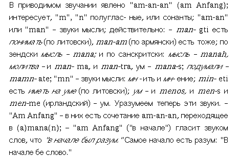
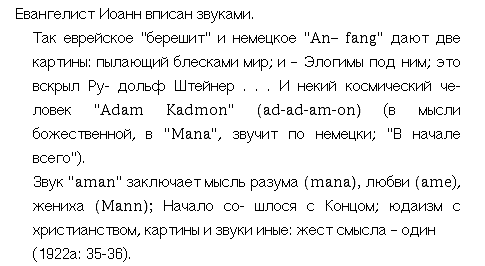
Belyj looks at *mn, *man, *men and the interconnection of sounds in Indo-European languages moving back and forth between the philological, the mystical, and the poetical for his comparisons. His sound determined associations cross boundaries of languages, disciplines and traditions. All the while Belyj reiterates his own subjectivity, admitting that this self-awareness of sound inside of us is still in an infantile state, and offering a tale, a fairy tale for some, but for him the absurd truth (dikuju istinu) (31).
What follows is the essence of Glossalolia, a mixture of free associations, inspired by sound, and grafted onto Steiner's cosmogony of Saturn, Sun, Moon, Earth contained in his Die Geheimwissenschaft in Umriß. Belyj briefly describes each day of creation, and then offers an account of how the world of consonants and vowels came to be inside-the-mouth. This cosmology is assisted in Russian by Belyj's juxtaposition of nebo = sky and n’obo = palate. Belyj frequently rebounds between the philological and the mythical-mystical.
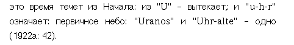
"Time," "hour" emerge from "ha" and "er" and Arché begets Chronos, the Herr who conquers Uhr and Ur, Uranus. A graphic depiction of this first day, Saturn, inside the mouth is a cross "h, r, w, sch", within the circle "a-e-i," the vowels for Yahweh, and æggs, æternal, eve, avva, abba, father, Jupiter.
These sound associations for the main part are bound to Indo-European roots, but in two instances Belyj provides non-sense sounds. The first is "wi-we-wa-wo-wu, hi-he-ha-ho-hu, wir-wer-war-wor-wur, chri-chre-chra-chro-chru, wri-wre-wra-wro-wru" (1922a: 48). Here the sounds, not directly related to known roots, resemble most closely the glossolalia of Paul and modern day Pentecostalists.
On the second day, the day of the Sun, we begin to emerge. We who were people of the dawn (na zare)-Nazareans. In a key passage Belyj connects his own zvokoslovie with glossolalija:
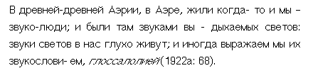
On the third day Belyj provides another non-sense passage along with an explication.
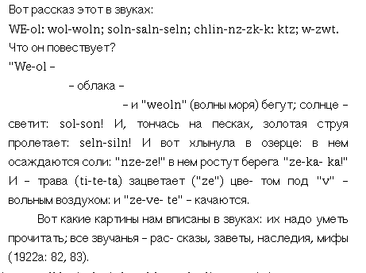
While this may all be indecipherable to the listener, it is not senseless to the speaker! It culminates in the assertion that comprehension is the apprehension of amendations of the surrounding world: I ottogo to ponjatie est' pja[tie izmenenij obstavshego mira (1922a: 90). Belyj breaks his narrative to restate his essential belief that understanding is not enough: we must comprehend, take it into ourselves.
On the fourth day of creation, the biblical creation of the world and Man, the sounds of Earth and speech emerge: "Polost' rta est' zarodysh vselennoj, grjaduschej kogda-nibud'… . . ." (1922a: 105). The sounds of Earth are Belyj's own Sefer Jezirah, which contains the five vowel sounds: a, e, i, o, u and the Russian consonants x, s, r, z, zh, sh, sch, ch, t, k, l, n, d, m, b, f, p, g, k, ts. Many are illustrated by a sort of zvukoslovie where meaning is determined or directed by sound:
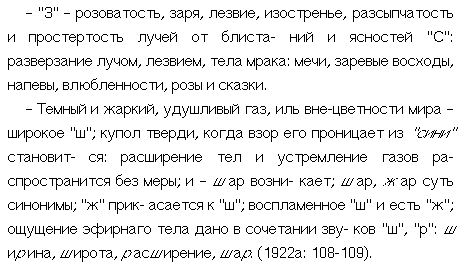
At these moments of most sustained poetry, or glossolalia, Belyj reiterates the personal and arbitrary nature of his work:"Kogda ja utverzhdaju &endash; ‘zvuk to-to i to-to’; to ne zakrepljaju za utverzhdeniem nichego, a risuju nabroski… i totchas kidaju i zvuki tekut…..." (1922a: 114) ).
The ability to read sounds hints at the "tongue of tongues" (jazyk jazykov) and of the Second Coming. It closes the circle. This sound can be depicted graphically, but it is also a gesture, which eurythmy depicts in motion: "evritmija legka, kak pushinka, svetla, kak zarja i chista, kak almaz" (1922a: 127). Image and thought are a unity and our goal is to overcome the duplicity of the literary word, to transcend the tragedy of thought without the word, to comprehend the whole word. Eurythmy, the new science, this joyful science, enlightens and leads us to restoration of brotherhood of peoples, the Second Coming.
To look at the work simply as a treatise on the origins of human language or even as a cosmogony is to ignore the fact that it is a poem, characterized by devices of poetic speech, or more precisely, those of Belyj's poetic, ornamental prose. The primary organizing factor of the work is sound; the resulting associations and affinities then resonate with assonance, alliteration, internal rhyme, all of which are embodied in the poetry that Belyj is writing in 1922. Note, for example the repetition of t, k, and l sounds:
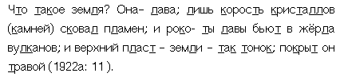
The text also contains frequent extended strings of the ternary feet characteristic of other later "prose" works by Belyj:
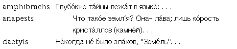
Given the complexity of the work it is little wonder that Glossolalia perplexed readers and irritated reviewers. When it appeared in Berlin along with a flurry of other publications by Belyj, it attracted little critical attention. Sergej Bobrov wrote a scathing attack on Belyj and symbolism, offended by the religious-mystical-anthroposophical basis of the book, which he dismissed as a "howl" (vopl'ju).
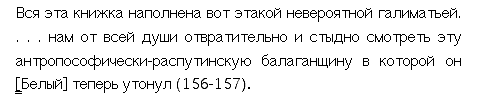
A somewhat more tempered, albeit critical review signed L. Chatskij appeared in the Berlin journal, Spolochi:
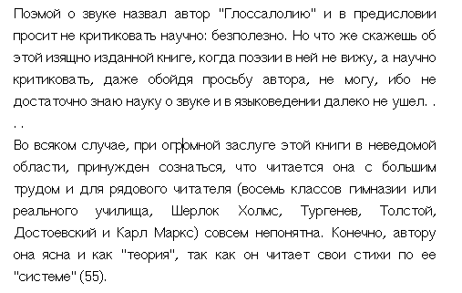
An important exception to this negative reaction was expressed in a review signed simply "V.L.Æ
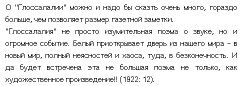
V. L. was Vera Lourie (Lur'e), who was particularly close to Belyj and had received an autographed copy of Glossalolia. The review is significant because it was inspired by Belyj's own words. Vera has admitted:
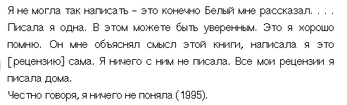
The unrestrained praise for the work both mark her own affection for Belyj and point to his own personal evaluation and enumeration of the key aspects of his work: it is a tale about the creation of the world from sound, the way for our soul(s) to merge again with the world soul, and the path to new art form in which movement, the poetic word, and the graphic arts would complement one another. It is not philosophy, but a poem, where form and content are one, a unity. In this evocation of the symbolic word, Belyj, of course, returns to his own Symbolist roots.
How is the critic/scholar of Belyj to deal then with this "poem" which the author considered so "successful"? The rhythm and poetic form are constituent elements of the text. It is, however, the nature of the content, both hermeneutic-interpretative and hermetic-esoteric, that enriches the text while making it so complex and for most inaccessible. The confusion of genres already mentioned also intimidates and blocks access, and as esoteric literature it defies most attempts at scholarly analysis. Chatskij facetiously offers an option to those interested in comprehending Belyj's text:
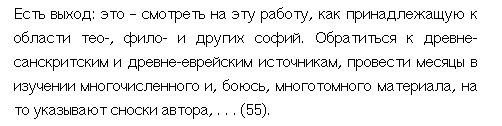
Even before examining this voluminous material it is legitimate to ask, to what extent is Belyj's work "glossolalia" at all. The title of the 1922 version is Glossalolija[. In Belyj's article "Aaron’s Staff" (ZHezl Aarona) the word appears as glossolalija (1917: 212), as it does in an excerpt of the work printed in Drakon in 1921. Klavdija Nikolaevna Bugaeva and A. Petrovskij also identify the text as Glossolalija, pointing out that the spelling Glossalolija is a misprint (623).
Today glossolaly is relegated to three realms, the religious, the psychological, and the poetic; or as one recent historian of the phenomenon Jean Jacques Courtine puts it: "religieux, pathologique, ou poétique" (1988: 7). The religious tradition has its origins in the New Testament when the Holy Spirit descends upon the Apostles at Pentecost after which they speak in new tongues (Gospel of Luke 16:17). "And they were all filled with the Holy Spirit and began to speak in other tongues as the Spirit gave them utterance" (Acts of the Apostles, 2:4). In Paul "tongues" are seen as gift and a sign of the Spirit (I Corinthians 12), and he refers to "speaking in tongues" (I Corinthians14). Psychological interest in glossolalia was heightened at the turn of the century in the book by Theodor Flournoy Des Indes à la planète Mars: Etude sur un cas de somnambulisme avec glossolalie (Paris 1900) The linguistic aspect of glossolalia has been explored by Roman Jakobson (1979), who does not mention Belyj in this connection, and Efim Etkind in The Matter of Poetry (Materija stixa 1978). In his chapter on "Sound and Sense" (Zvuk i smysl), Etkind recalls the Russian fascination with sound in the second decade of the twentieth century. The renewed religious interest in "speaking in tongues" among American Pentecostalists in the 1960's found a poetic or literary echo in the story by John Barth, "Glossolalia" (1963).
Belyj's work fits into all three traditions. The religious-esoteric tradition leads from Genesis: "In the beginning God created heaven and earth" (B’reschit bara élohim et haschamajim w’et ha’arez) to St. John: "V nachale bylo Slovo, i Slovo bylo u Boga. I Slovo bylo Bog...V Nem byla zhizn', . . . Æ (John 1:1) Belyj's hermetic approach includes reference to the Sefer Yetsirah, (The Book of Creation), Zohar (The Book of Splendor) and Jakob Böhme's Aurora. These all point directly to Rudolf Steiner, whose cosmogony, exegesis of the Genesis, and the emerging art of eurythmy are the key to reading and understanding Belyj's text..
Belyj cites two works by Steiner as key: Die Geheimwissenschaft im Umriß, and Zyklus XIV. In the first Steiner outlines his own cosmogony consisting of the four days of Saturn, the Sun, the Moon, and the Earth. Steiner is also the likely source of the Jewish Cabala, of substantial interest to him, and the fascination with Max Müller, the philologist-glossologist-mythologist. Belyj mentions several times "eurythmy," the art of movement to express sound. His drawings of the tongue and his repeated references to gestures (;esty) correspond to foundations established by Steiner in his lectures and the actual practice of eurythmy at Dornach, subsequently described in works such as Eurythmie, and Eurythmie als sichtbare Sprache.
Belyj hints at the psychological, "pathetique" of his own musings calling them in one place "bezumie" (1922a: 28) and in another "bred" (1922a: 34)! While most of his work tries to establish a correspondence between original roots and their meanings, in particular, between the sound and meaning of Indo-European roots and languages, there are as we have noted two instances of what can only be called nonsense sounds.
The linguistic/poetic strain falls into the overlap of glossology and glossolaly. Several philologists, or glossologists, are mentioned including A. Meillet and M. Potebnya. Belyj cites several standard German works, including those by Karl Brugmann and Benseler. The major philological influence in Belyj's work comes from F. Max Müller, German born and educated, who became the Professor of Comparative Philology at Oxford. The categories of language and many of the basic roots appear to be direct borrowings from Müller Indeed, Belyj's work fits into a context of 19th and early 20th century attempts to find the origin of language, and the positing of Indo-European (Indogermanisch), "Aryan" for Müller, as the basis of language. In a work not cited by either Belyj or Steiner there is an important transition from roots of words to Greek myths in particular, a connection that Belyj too explores poetically in Glossolalia.
The poetic preference for sound over sense in Russian was already emerging in 1917 and Belyj, as he had been a decade earlier in his pioneering metrical studies, was one of the leading voices for a new theory and practice of poetic language, even though much of what Belyj composed during these turbulent times of 1916 and 1917 was published only later in 1921 and 1922. Glossalolia, in one sense, is as much a product of Belyj's Russia in 1917 as it is of Germany in 1922.
Having returned from Dornach to Russia in the fall of 1916, Belyj spent time at the estate of Ivanov-Razumnik at Carskoe Selo in February of 1917 and then later again in the fall. Here he met Nikolaj Kljuev and Sergej Esenin, both of whom he quotes in Glossolalia. He worked on several articles for the journal, Skify, including a lengthy unpublished article "Toward the sound of words" (K zvuku slov) which would become Glossalolia. An important theoretical basis for the work appeared in 1917 in "Aaron's Staff":
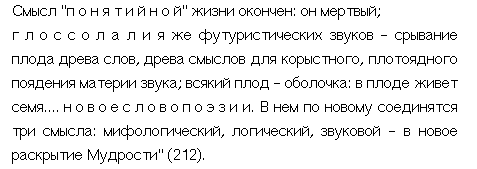
The article was part of an ever evolving theory of the poetic, symbolic, magical word in Belyj's writings. His working definition of "glossolalia," of the "new poetical word," combining the mythological, logical and the sound senses leading to Wisdom, was for Belyj a matter of faith and ultimately the theory embodied in practice in Glossalolia.
Glossolalia was thus not an isolated event. At the time of its composition in 1917, Belyj's own prose was moving further and further in the direction of sound dominating over sense or meaning. There would be an acceleration of that process in which sound and sense would be found in inverse proportion, i.e. the sound of words achieved ever increasing significance, while the meaning or reference of words became less important as the organizing force of Belyj’s works. Style increasingly became the substance. Sound prevailed over sense. The word predominated over the sentence. The part was often more important than the whole. Belyj disassembled the linear and temporal components of logic. In place of traditional exposition, in which one word following another was logically connected with it, there was a verbal and spatial logic based on the repetition of sounds, roots, words. Connections were made by associating like sound elements. The chaos of external reality was ordered only by the imposition of an internal patterning upon the words. This was the Symbolist poet sensitive to sound and asserting the poet’s right to order the world verbally.
The text was far more, however, than simple word play. Belyj, as Glossolalia demonstrates, firmly believed in the "magic of words," i.e. that words formed a secret, mysterious repository of esoteric knowledge, and his life and creative works were attempts to bridge the gap between everyday experience, the perception of reality, and this other noumenal world where the elemental chaos of our existence would give way to order. This was Belyj's search for some way out the chaos which he perceived around him and in his own life. He was forever searching for that special secret, a synthesis, which would provide a simple answer to a complex world. Glossolalia was a poetic experiment to find sense in the non-sense of language. Belyj's aim throughout his artistic career was to revitalize language, to create the "living word." In Glossolalia sounds abound, and gradually the reader comes to see and hear that the sound precedes the sense, that the unit comes before unit - y.
Glossalolia is a cosmogony, a theory of the origin of the universe based on sound; but it is less a new direction, than a compilation, culmination, and summation of Belyj's poetic credo. It is the most foreign and most "esoteric" of his completed works, and makes enormous demands upon the reader. In addition to the multilingual word play, ranging from Armenian to Zendic, there is content, the intertextuality of the work, and the difficulty in reading any esoteric literature. The work refers to philology and philosophy, draws on a long Judeo-Christian tradition, the Old and New Testaments, the Cabala, and the teachings of Rudolf Steiner, requiring an act of faith to embrace the supra- or super-sensible.
Belyj's poem was undoubtedly misunderstood, or unappreciated by his readers. Yet, his leaps are bold, and the text shines with a brightness and rings with a clarity so uncharacteristic of the time in Berlin. The text plays the music Belyj was hearing, and if it can be grasped, comprehended &endash; even if not completely understood &endash; it opens new possibilities for a re-examination of all Belyj's work after 1917. As Bugaeva and Petrovskij commented: "Sub"ektivno, v plane tvorchesta samogo Belogo, eta ‘poema o zvuke’ nashla, odnako, podtverzhdenie: (623).
It is also a document to Russian Berlin. It is certainly the most "German" of his works. No other work of the period has such a mixture of Russian and German language and roots, a knowledge of which is crucial for many of the associations; for example, Ich (German for "I") as the monogram for Iusus Christus is crucial to Belyj's cosmogony. Belyj knew German well from his governess, his own reading in philosophy, and his association with Steiner via lectures and life at Dornach He was on occasion the German language spokesman for the Russian literary community in Berlin, for example at an evening with Thomas Mann in March 1922 or Gerhart Hauptmann in November 1922. (Beyer, 1990: 111, 127). There is the unmentioned, but significant influence of the German Romantics, Novalis and Friedrich von Schlegel. Goethe and Nietsche are quoted and identified. Potebnya admits his own dependence on the works of dependence on Wilhelm von Humboldt. The study of roots and their relationships are part of a long German philological tradition.
Ultimately Belyj's Glossalolia belongs to all and consequently none of the glossolalic traditions, and to no one language. It is a "new word," a multilingual addition to the tradition and bibliography of "spiritual science." The work is unique to Russian literature and is a singular Russian contribution to Indo-European studies. As a "poem" representing Belyj’s own evolving emphasis on the primacy of sound over sense, it is an important cultural document of Russian Symbolism and provides ties to the larger European intellectual context.
Glossalolia was so ambitious in its reach and intention, that some may conclude it falls short of its goal. Yet if it fails, it does so magnificently.